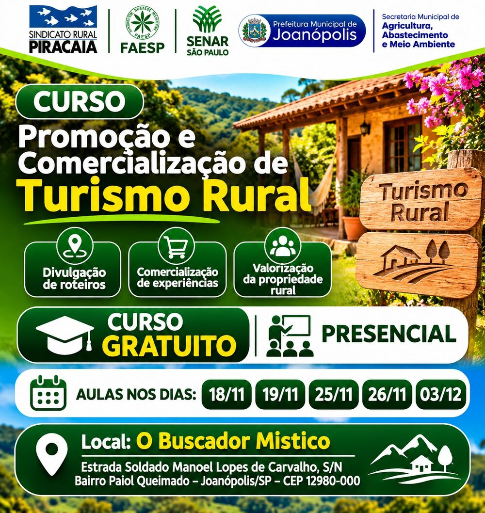

Realização: Sindicato Rural de Piracaia · FAESP · SENAR São Paulo · Prefeitura de Joanópolis (Sec. de Agricultura, Abastecimento e Meio Ambiente)
Aprenda a atrair mais visitantes, divulgar seus roteiros e vender experiências que valorizam a sua propriedade rural.
Inscrição rápida pelo WhatsApp · Vagas limitadas
Não basta ter um lugar bonito: o turista precisa te encontrar, se encantar e reservar. O curso mostra o caminho na prática.
Monte e divulgue roteiros atrativos, use a internet e as redes sociais e apareça para o público certo.
Transforme a vida no campo em experiências únicas que o turista quer viver, e pagar por elas.
Descubra os atrativos da sua propriedade e posicione seu negócio com diferencial competitivo.
Conteúdo baseado na cartilha oficial do SENAR-SP “Promoção e Comercialização de Turismo no Meio Rural”.
Uma oportunidade rara de se qualificar sem gastar nada, aqui pertinho de você.
Sem mensalidade e sem taxa de inscrição
Tire dúvidas na hora e aprenda na prática
Metodologia de quem forma o produtor rural paulista
Novas fontes de receita para a propriedade
Conheça outros empreendedores da região
Saia com um plano de vendas para o seu negócio
São 5 encontros presenciais. Participe de todos para aproveitar o conteúdo completo.
Estrada Soldado Manoel Lopes de Carvalho, S/N
Bairro Paiol Queimado · Joanópolis/SP
CEP 12980-000
Curso totalmente gratuito, oferecido pelo SENAR-SP com o Sindicato Rural de Piracaia e a Prefeitura de Joanópolis. As vagas são limitadas!
Reservar minha vaga gratuitaMande o convite para amigos e vizinhos que trabalham no campo.

Enviar para um amigoSim! Não há nenhum custo de inscrição ou mensalidade. É uma iniciativa do SENAR-SP, FAESP, Sindicato Rural de Piracaia e Prefeitura de Joanópolis.
É só tocar em qualquer botão verde desta página. Você será levado ao WhatsApp com uma mensagem pronta; basta enviar e nossa equipe confirma sua vaga.
Não. O curso serve tanto para quem já recebe visitantes quanto para quem está pensando em começar a trabalhar com turismo na propriedade.
Não, o curso é presencial, no O Buscador Místico (Bairro Paiol Queimado, Joanópolis/SP).
Os horários de cada encontro são informados na confirmação da inscrição pelo WhatsApp.